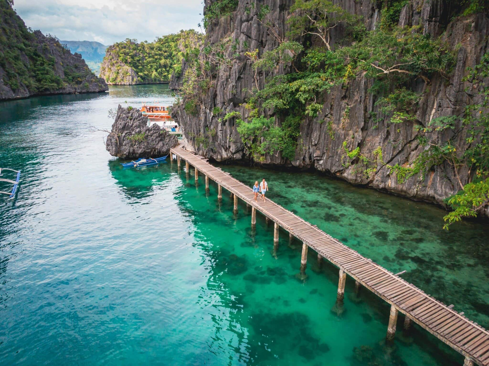
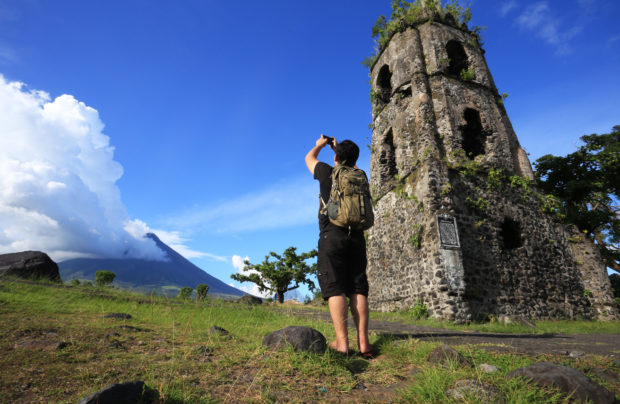
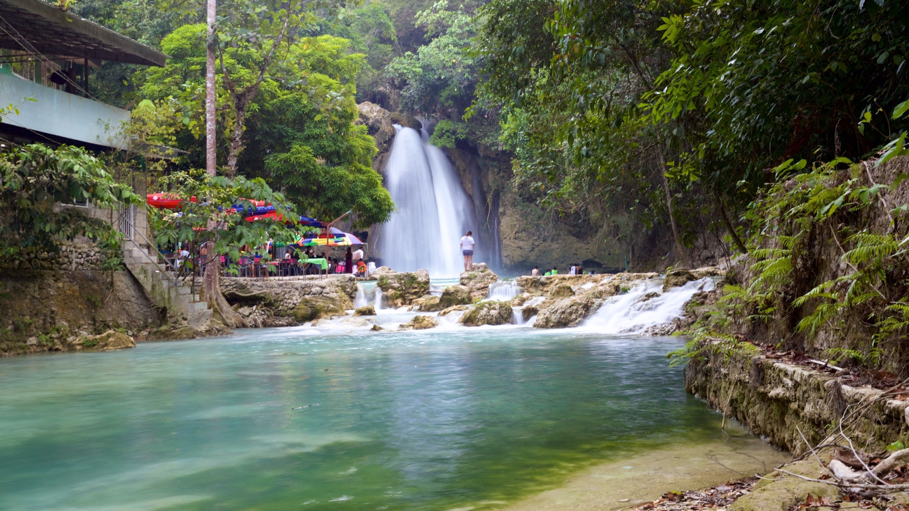
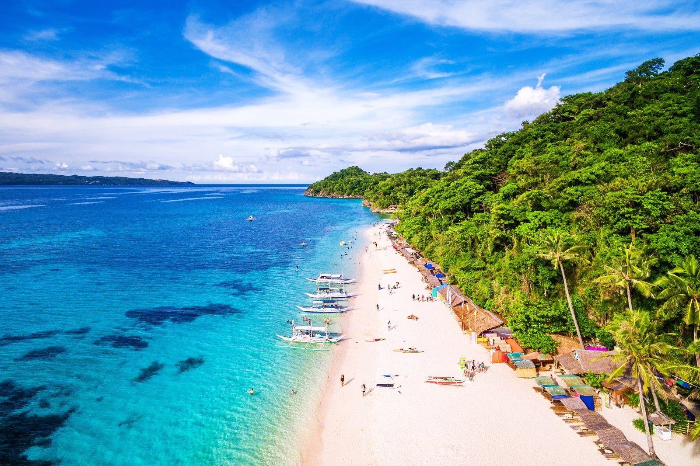

TOURIST SPOT
| HOME | PLACE | FOOD |
|---|
LUZON

Batad Rice Terraces The Banaue Rice Terraces is a famous tourist spot known for its beautiful rice terraces, rich culture, and breathtaking mountain views. |
 Coron Palawan Kayangan Lake is a famous tourist spot in Coron, Palawan, known for its crystal-clear water, limestone cliffs, and stunning natural scenery. |
 Cagsawa Ruins Cagsawa Ruins is a famous tourist spot in Albay, known for its historic church ruins and the beautiful view of Mayon Volcano. |

Calle Crisologo Calle Crisologo is a famous tourist spot in Vigan, known for its well-preserved Spanish colonial houses and historic streets. |
Rizal Monument Rizal Monument is a famous landmark in Manila that honors the Philippine national hero, Dr. Jose Rizal. |
VISAYAS

Chocolate Hills Chocolate Hills is a famous tourist spot in Bohol, known for its unique cone-shaped hills and beautiful scenery. |
 Kawasan Falls Kawasan Falls is a famous tourist spot in Cebu, known for its turquoise water and beautiful waterfalls. |

Magellan's Cross Magellan's Cross is a famous tourist spot in Cebu, known for its historical and cultural significance. |
 Boracay White Beach Boracay White Beach is famous for its white sand, clear blue water, and beautiful sunsets. |

The Ruins The Ruins is a famous tourist spot in Negros Occidental, known for its beautiful mansion ruins and rich history. |
MINDANAO

Aliwagwag Falls Aliwagwag Falls is known for its beautiful waterfalls and peaceful natural scenery. |
Tinuy-an Falls Tinuy-an Falls is famous for its wide waterfall and clear freshwater. |

Enchanted River Enchanted River is known for its crystal-clear blue water and natural beauty. |

Eden Nature Park Eden Nature Park is a popular destination known for its gardens and cool climate. |

Mount Apo Mount Apo is the highest mountain in the Philippines, known for its stunning views and hiking trails. |